Even for very experienced radiologists, high levels of noise and similarity between various pixels in CT scans make detecting and classifying brain hemorrhages a challenging task (Ahmed & Prakasam, 2025). This project addresses these complexities by applying a range of machine learning techniques to a sample dataset of CT images. Various modeling approaches were implemented, from basic regression algorithms to convolutional neural networks (CNNs). A U-Net model was also used for pixel-level segmentation to pinpoint the exact locations of abnormalities within hemorrhage-positive brains. Along the way, other key challenges were encountered, such as uneven class representation within the data and overfitting during model training. Overall, this project provides insight into how certain modeling algorithms might be more effective at medical image classification.
Budri et al.: Brain CT Image Hemorrhage Classification and Segmentation
brain CT, cerebral hemorrhage, convolutional neural networks, Grad-CAM++, medical image analysis, segmentation, U-Net
Cerebral hemorrhage is a critical medical condition characterized by bleeding within the brain. It is imperative that hemorrhages are detected quickly, since the condition can become life-threatening in a matter of minutes (Brain Bleed, n.d.). Additionally, different types of cerebral hemorrhage are treated differently, so correct classification is also imperative. Furthermore, identifying the exact location of the hemorrhage within the brain can help doctors operate more quickly. The primary objective of this project is to apply machine learning techniques to classify and localize cerebral hemorrhages from CT scans.
The dataset used in this study includes CT scans of multiple hemorrhage types— epidural, intraparenchymal, intraventricular, subarachnoid, subdural, as well as normal cases without hemorrhage. By comparing their effectiveness at hemorrhage detection and classification, this project explores the differences between a wider array of machine-learning techniques, providing more insight into what methods might prove most effective for the medical community. Further significance of this project lies in its potential to increase surgical efficiency, as automated identification of the exact location of a hemorrhage through successful segmentation can increase the speed, consistency, and accuracy with which diagnoses can be rendered.
Overall, this project evaluates the effectiveness of multiple machine learning approaches for cerebral hemorrhage classification and segmentation while highlighting the importance of aligning model design with data structure. By combining classification, visualization, and segmentation techniques, this work provides insight into both the capabilities and limitations of current approaches in medical image analysis.
To classify and localize brain hemorrhages, this project explores a range of modeling approaches, beginning with basic machine learning methods and progressing to deep learning models. A binary logistic regression model was first implemented as a baseline, though it lacked the ability to distinguish between hemorrhage subtypes. This was followed by a multiclass SoftMax logistic regression model, which attempted to classify multiple hemorrhage types but performed poorly due to the loss of spatial information when images were flattened into vectors. To further explore other modeling choices, a direct multi-label sigmoid logistic regression model was implemented. While this method allows prediction of non-disjoint hemorrhage types, the dataset’s single label structure and the existence of the “multi” class made it a less appropriate modeling choice.
Next, two different CNN models with the same underlying structure were implemented using both sigmoid and SoftMax outputs. Implementation of a sigmoid-based CNN explored furthering the multi-label approach, while SoftMax-based CNN models attempted to prioritize the underlying structure of the dataset’s label-space. An AI-driven CNN subsequently introduced model enhancements such as class weighting, data augmentation, and training optimization techniques. Metrics such as f1-scores and precision were used to provide more detailed insights into where each model found more success.
In addition to classification, the project incorporated Grad-CAM++ (Gradient-weighted Class Activation Mapping) to provide interpretability by highlighting important regions in CT scans, as well as a U-Net architecture for segmentation to localize hemorrhage regions.
This dataset contains five classes of brain hemorrhages including epidural, intraparenchymal, subarachnoid, intraventricular, subdural, and normal (no hemorrhage present). Figure 1 provides a visual description of each hemorrhage class. For each, the location of the hemorrhage is indicated by a red arrow. The images in the dataset are stored in Digital Imaging and Communications in Medicine (DICOM) format, which preserves detailed pixel-intensity information necessary for medical analysis. All of these raw DICOM CT scan files are stored in nested subfolders that are organized by hemorrhage type and further organized according to four rendering types. Within the folders for each hemorrhage type are four subdirectories—brain_bone_window, bone_window, max_contrast_window, and subdural_window—representing different CT scan rendering types. Before applying different machine-learning methods, the raw image data needed to be cleaned and transformed into an appropriate input size. In order to achieve more manageable model computation times, a random subset of 500 images was selected from the full dataset. Each image was then converted to grayscale, resized to 128 128 pixels, and transformed into a NumPy array. Pixel intensities were normalized from the 0–255 range to 0–1 to improve numerical stability during training. The subsequent steps taken for preprocessing were task dependent. For example, for binary classification models, the processed image array was then reshaped to include an extra dimension for predicted label-space when appropriate, producing inputs of shape (n, 128, 128, 1). For binary logistic regression, labels were recoded as normal versus hemorrhage; for multiclass classification, the multi category was excluded, and the remaining classes were encoded numerically, so that the input was of shape (n, 128, 128, 6). For the sigmoid one-vs-rest setting, labels were converted into multi-hot vectors. Finally, the data were split into training and testing sets using an 80/20 split, and image tensors were flattened into 16,384-dimensional vectors when required for logistic regression models. This 80/20 split was done using a stratified split in an effort to retain class proportions. For the segmentation portion of this project involving U-Net, additional preprocessing steps were required, including the generation of pixel level masks (binary and multi-class). These steps are described in detail in the U-Net section of this report.
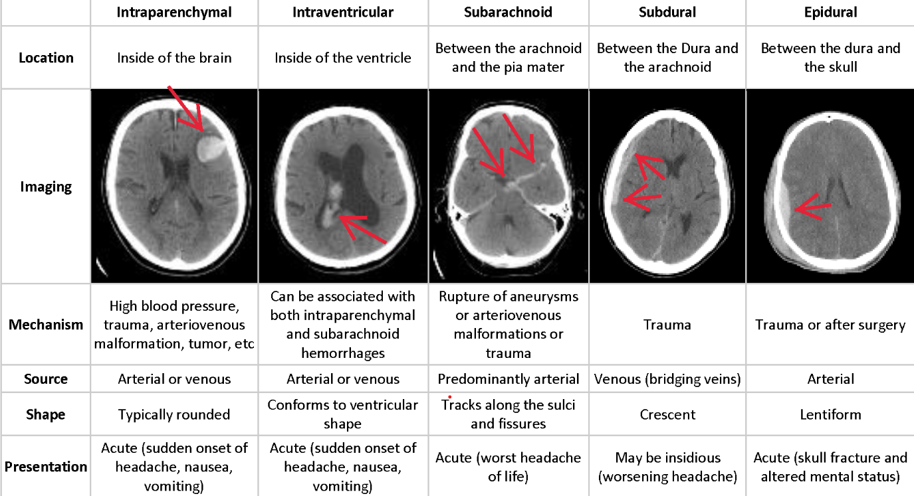
We will begin our discussion of modeling with the classification of cerebral hemorrhage types using a progression of machine learning models, ranging from more basic methods to deep learning approaches. These consisted of baseline models such as binary logistic regression, followed by exploring different ways of representing the various types of hemorrhages, looking at different convolutional neural network (CNN) architectures, and conducting error analysis for each of these. Before applying each algorithm, the dataset was first preprocessed and split into training and testing sets, with images resized, normalized, and reshaped as required for compatibility with each of the various classification algorithms used. See the previous section for more explanation on this.
We began by implementing a binary logistic regression model, as a baseline, with results shown in Fig. 2, treating the problem as a binary classification task (hemorrhage vs. normal). This model provided an initial starting point but showed limited performance due to its inability to capture the images’ structure, due to the flattening required. The binary logistic regression achieved a test accuracy of 93-95%, but was not able to distinguish between different hemorrhage types.
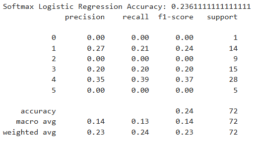
We then extended this to a multiclass softmax logistic regression model, which was able to predict a single hemorrhage type per image, after removing the “multi” class to avoid confusing the model. Although this model was able to account for multiple types of hemorrhages (apart from the “multi” class), it relied on flattened image inputs and therefore performed poorly due to the loss of spatial information. Our final test accuracy was about 31%.
To further explore alternative approaches, we implemented a multi label sigmoid logistic regression model, using a OvR (one-vs-rest) strategy to extend Scikit-learn’s LogisticRegression binary classifier to multiple classes. Each class was treated as an independent binary classification problem, allowing for the possibility of multiple classes being predicted per image. However, because the dataset only provided one label per image (the labels were mutually exclusive), this approach did not account for any information that was not also accounted for through multiclass SoftMax. As a result, performance remained limited and highlighted the mismatch between the model formulation and the dataset structure. The test accuracy was 14% while the training accuracy was 24%, the observed overfitting further reflecting the mismatch between model choice and data structure. Additionally, it is worth mentioning that due to these basic methods being more computationally expensive, they were only run on a random stratified sample of 500 images, not all 114,013 brain-window images.
Next, we implemented a CNN model with a multiclass sigmoid output, designed to model the problem as multi-label classification by predicting each hemorrhage type independently. Training metrics were analyzed across epochs, including training accuracy, validation accuracy, training loss, and validation loss. Results showed that training accuracy increased to approximately 75%, while validation accuracy remained significantly lower (approximately 25–30%), and validation loss increased over time. This divergence indicates overfitting, meaning the model learned the training data well but failed to generalize. The structure of the sigmoid-based CNN is shown in Fig. 3.
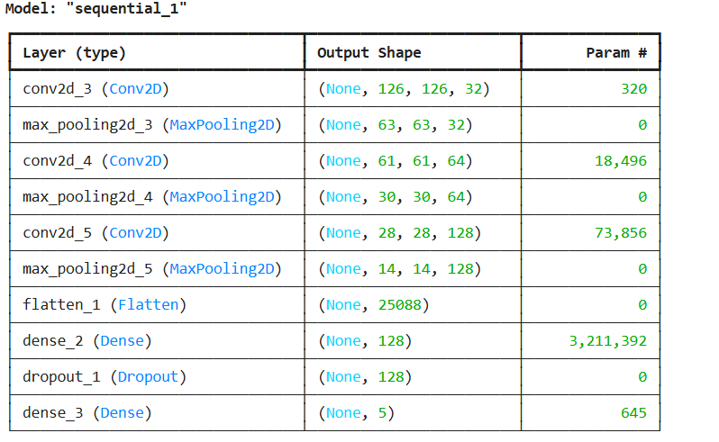
Next, a CNN model with a multiclass SoftMax output was constructed, which was more appropriate for predicting mutually exclusive classes. This model had the same underlying structure as the previous sigmoid model, but with only two 2-dimensional convolution and pooling layers instead of 3. The initial SoftMax CNN model was able to establish a training accuracy of about 57% and validation accuracy of about 56%. However, due to the arbitrary nature of this construction, an AI-driven CNN model was subsequently implemented with the help of ChatGPT (OpenAI, 2026). This model incorporated several enhancements, including class weighting to address class imbalances in the dataset, data augmentation to reduce overfitting, batch normalization for training stability, and global average pooling to reduce model complexity. Additional techniques such as early stopping and learning rate reduction were used to further optimize training. This AI-driven model did not end up performing well, with the highest validation accuracy of about 42% occurring during Epoch 4 of 8. By the last Epoch, the training accuracy had only reached 41%. A more detailed analysis showed that the f1-score for the epidural class was 0, suggesting a fatal flaw in the AI-driven model. Since this model was purely exploratory, it was simply abandoned, but further analysis could help illuminate what aspects of this model made it unsuitable. See Figs. 4 and 5 for the structure and detailed accuracy analysis of the AI-driven model.
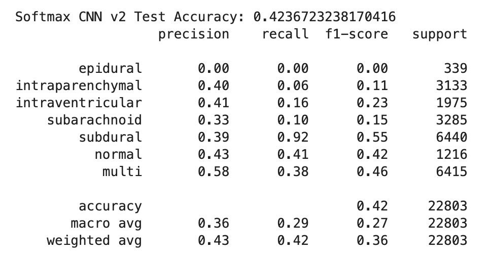
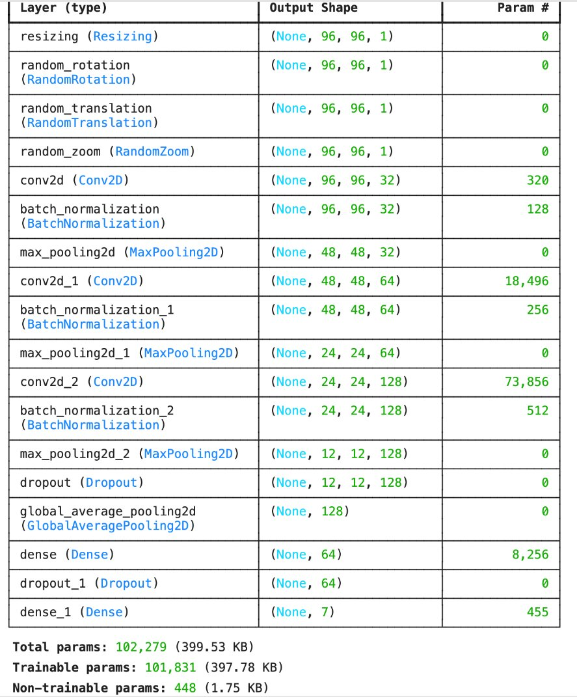
Subsequently, the original 2-convolution SoftMax CNN model was trained further, with a few modifications. With the help of AI, early stopping and ReduceLROnPlateau were added to optimize the training process. After training 5 more epochs—meaning 20 in total for this model, this final SoftMax CNN model achieved training and validation accuracies of approximately 60% and 59% respectively, representing the best overall performance among the models tested. However, class-level performance remained uneven. More detailed accuracy analysis (see Fig. 6) showed the model performing stronger for certain classes and weaker for others. These disparities were significant — the subdural hemorrhage group had an f1-score of about 0.69, while the epidural group had an f1-score of about 0.11. These f1-scores did not appear to be directly correlated with the frequency of specific hemorrhage types within the data, though. For example, despite being the third most common group, subarachnoid hemorrhages had the second lowest f1-score at about 0.42. Thus, while class imbalances in the dataset were definitely an added complexity, more investigation is warranted as to what aspects of the CNN caused such drastic f1-score imbalances. The fact that epidural hemorrhages had the lowest f1-score in both the AI-driven and original SoftMax models suggests that a similarity in the structure of both models might be to blame. It is more likely, though, that this is due to the way the test-train split was made, as the support column shows that epidural hemorrhage CT scans were almost 6 times less frequent in the test split than the second least common hemorrhage class. Figures 6–8 show the detailed accuracy analysis for the last five epochs of the CNN model, the structure of the original CNN model, and the loss and accuracy plots for the first 15 epochs. Since the last 5 epochs were run in different Python kernels, a continuous plot for all 20 of epochs of the SoftMax CNN unfortunately does not exist.
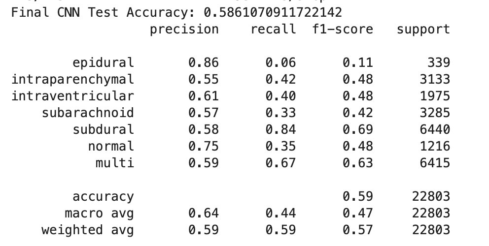
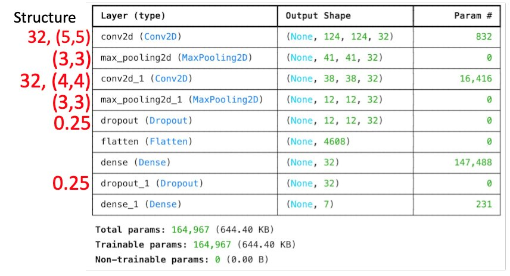
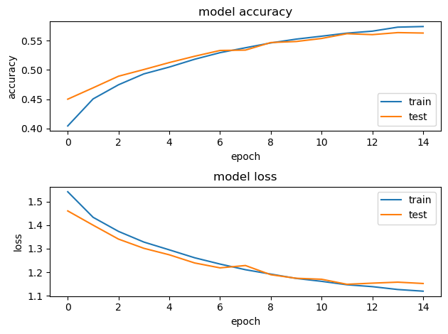
Overall, approaching classification with an increasingly complex progression of modeling approaches proved useful in highlighting the strengths and shortcomings of the different techniques employed. Binary logistic regression served as a simple baseline but was insufficient for image-based classification. Multiclass SoftMax logistic regression also performed poorly due to the loss of spatial structure. Multi-label sigmoid logistic regression and CNN models were not well-suited to the disjoint nature of the dataset’s label space. Using a relatively simple SoftMax CNN model achieved the strongest performance by leveraging spatial feature extraction through matrix convolution, which was most aligned with the structure of the data. However, results were still limited by artifacts of the CNN’s structure, and future research with a detailed emphasis on how differences in CNN structure directly impact different f1-scores would likely help drive more direct improvements for future models.
Following the classification results, this section shifts from predictive performance to model interpretability through Grad-CAM++, which was used to generate heatmaps highlighting the image regions that contributed most strongly to the model’s predictions. In the baseline experiments, the binary logistic regression model achieved approximately 93% test accuracy on an imbalanced dataset of 473 hemorrhage cases and 27 normal cases, whereas the multi-class logistic regression model achieved 23.6% accuracy on 359 single-label images, indicating that hemorrhage subtype classification is substantially more challenging than binary detection. Building on this classification framework, Grad-CAM++ was applied to the CNN multi-label classifier, which takes 128 128 grayscale CT images as input and outputs five sigmoid probabilities corresponding to different hemorrhage subtypes. In this way, it is possible to visually check which areas the model is focusing on when it predicts a certain hemorrhage subtype.
To visualize the class-specific response of the CNN, Grad-CAM++ was applied to the final convolutional layer of the network. For a target class , let denote the -th feature map in the last convolutional layer, and let denote the class score corresponding to class . The Grad-CAM++ activation map is defined as
where is the coefficient associated with feature map for class . In Grad-CAM++, these coefficients are computed from the gradients of with respect to the spatial elements of , together with higher-order derivative terms. After obtaining , the activation map is resized to the same spatial resolution as the input CT image and overlaid on the original image for visualization. This formulation provides a class-conditioned spatial map derived from the feature representations in the last convolutional layer.
For implementation, the last convolutional layer was identified automatically by traversing the model layers in reverse order. A secondary model was then constructed to output both the feature maps of this layer and the final class predictions. For each input CT slice, tf.GradientTape was used to compute the derivatives of the target class score with respect to the convolutional feature maps. Following the Grad-CAM++ formulation, these derivatives and the associated higher-order terms were used to determine the coefficients , which were then combined with the feature maps to generate the activation map. After applying ReLU and normalization, the resulting heatmap was resized to the original CT image resolution and overlaid on the grayscale slice for visualization.
Figure 9 exemplifies a situation where Grad-CAM helped demonstrate how, for an intraparenchymal hemorrhage, the model was not focused on the locations of the brain that contained the abnormalities during classification.
Figure 10 contrasts this with a much better epidural classification, where it is very clear that the parts of the image that the model focused on coincided heavily with the parts that were labeled as abnormal.
The main significance that the implementation of Grad-CAM highlights is that having a high-accuracy score does not mean that a model is working well. As the f1-scores of the final classification models demonstrated, many models have more success evaluating data that belongs to certain classes. A separate but perhaps equally important measure of model effectiveness is to know whether the model is looking at meaningful hemorrhagic regions, instead of irrelevant patterns. While, in this project, Grad-CAM++ was only implemented on the multi-label CNN, further work might involve implementing it on the final SoftMax CNN, or the experimental AI-driven version that used data-augmentation. In this sense, the classification section focuses on predictive performance, whereas the Grad-CAM++ analysis examines whether those predictions are supported by meaningful image regions. Future work could extend this interpretability analysis to the final SoftMax CNN and compare localization quality across model variants.
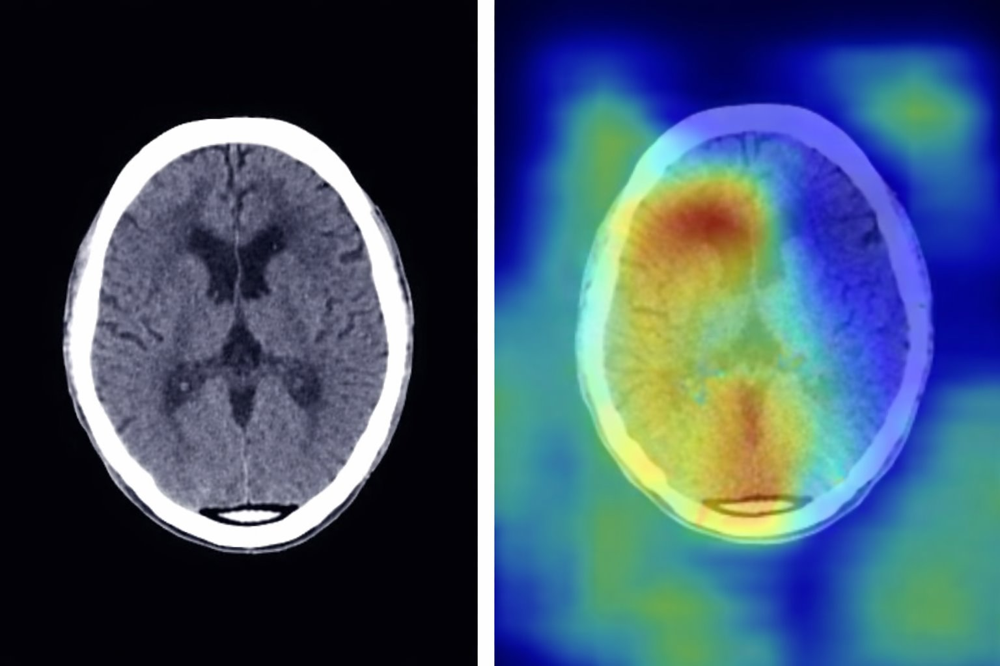
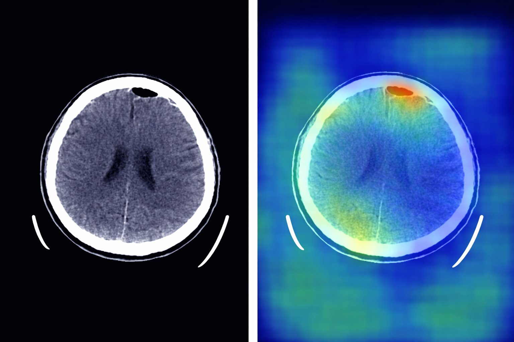
While Grad-CAM++ provides visualization of the regions influencing the CNN’s outputs, this section extends interpretability further by using U-Net to perform pixel level segmentation, allowing us to find the localization of hemorrhagic regions within CT scans.
To apply a U-Net segmentation model, preprocessing the CT brain hemorrhage images is required first. U-Net segmentation is a type of supervised machine learning meaning that input data and corresponding labels must be provided. The CT images provided by the project serve as the input, while U-Net requires specific information for each image.
The first step is creating the “data mask,” which allows the U-Net model to determine prediction accuracy and calculate the loss function by comparing its outputs with the ground truth. After preprocessing, two types of segmentation masks are generated for each image. The binary mask encodes hemorrhage regions as white and background as black, providing a straightforward signal for basic segmentation. The quad-level mask distinguishes four anatomical layers of background, brain tissue, skull, and hemorrhage, providing the U-Net model with more informative supervision during training. While the binary mask detects the presence of hemorrhage, the quad-level mask provides a richer anatomical context, enabling the model to better distinguish hemorrhagic tissue from surrounding brain structures during training.
To address class imbalance, 3,000 normal (non-hemorrhagic) CT images were randomly sampled and paired with all black data masks, including both binary masks and hemorrhage-free quad-level masks. This approach helps balance the ratio of positive to negative examples in the training set. The final outputs include organized image directories, two CSV label files (one for segmentation and one for classification), and corresponding mask folders for both hemorrhage and normal cases. The U-Net model was then trained to classify the CT image into 4 anatomical categories: background, brain tissue, skull, and hemorrhage region.
Input images and their corresponding quad-level semantic masks were paired and verified before training, retaining only samples for which both files existed. The combined dataset consisted of hemorrhage cases and 3,000 normal images.
The U-Net is primarily made by Encoder-Decoder architecture, Convolutional layers, Bottleneck, and Convolutional layers. The encoder progressively down samples the image to extract multi-scale features, while the bottleneck captures the most abstract representations. The decoder then upsamples these features back to the original resolution, using skip connections to recover spatial details lost during down sampling. Skip connections preserve fine-grained spatial information such as hemorrhage boundaries and edges, ensuring the model can produce precise pixel-level predictions.
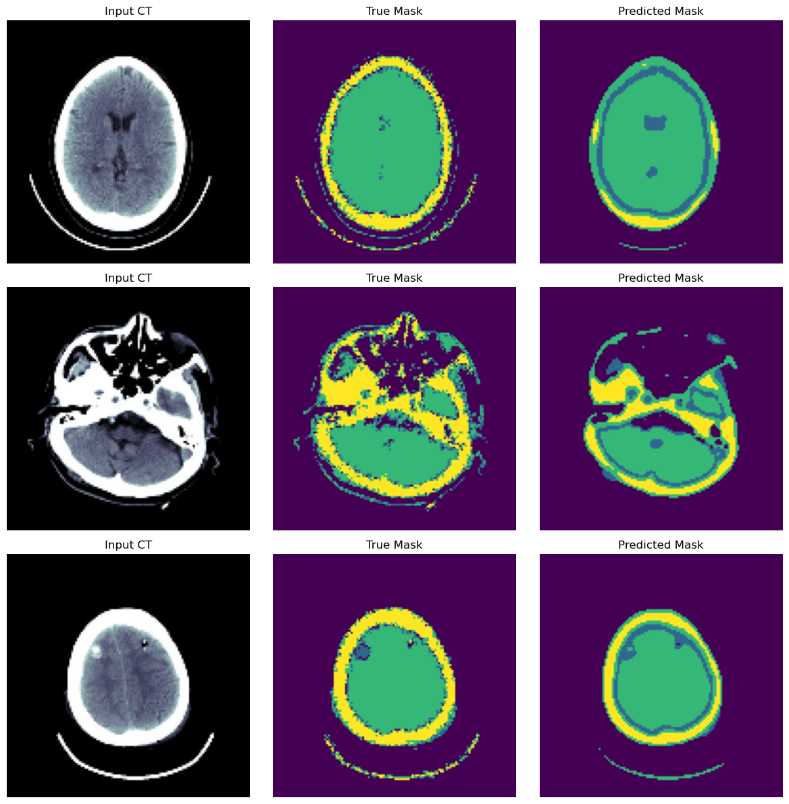
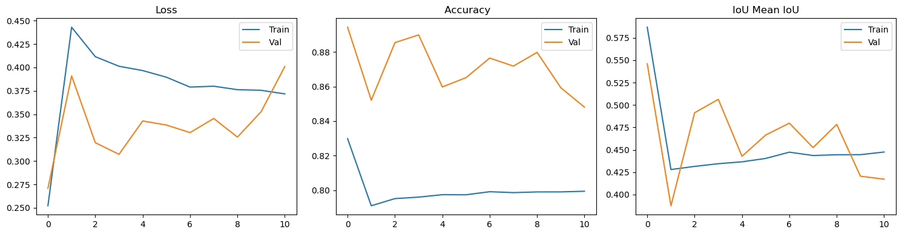
The training loss decreased from 0.45 to 0.37, indicating that the U-Net model continuously optimized each epoch and effectively learned the image features during training. No evidence of overfitting, such as decreasing training or an increase in validation loss, was observed within the model.
The training accuracy began at approximately 0.82 and stabilized at approximately 0.80, reflecting the model’s requirement to correctly predict all four distinct classes simultaneously. The validation accuracy was higher than the training accuracy, this may be because the validation set did not have data augmentation, which makes it relatively easier to predict.
The Mean IoU initially is 0.58 and stabilizes at around 0.43. The high initial value is because of an early tendency to predict the large area regions, with a high coverage but low precision. While large hemorrhagic areas are relatively easy to predict, minute and dispersed hemorrhages remain difficult to capture.
Performance was primarily constrained by the limited volume of training data and the low image resolution (128128); higher resolution inputs, such as 256256, would likely improve the detection of small and dispersed hemorrhages. Although increasing the resolution would likely yield better results, given the excessive computational time required, we decided to terminate the process at this stage.
In this project, several conclusions can be drawn from our use of machine learning models for classification and segmentation for cerebral hemorrhage.
One of the most important findings was that the nature of the model that is used should align with the structure of the dataset. In this project, we explored the use of both multi class SoftMax and multi-label sigmoid approaches for this dataset. However, since the dataset consisted only of mutually exclusive classes, both of our models using multi-label sigmoid activation functions (logistic regression and CNN) performed poorly, achieving a low validation accuracy of between 25% and 30%. In contrast, SoftMax-based models, which are single class predictors, performed better and were more appropriate for this project.
Binary and SoftMax logistic regression algorithms were thus used as our baseline for detection and classification respectively, with binary logistic regression achieving a test accuracy of about 93% and SoftMax logistic regression achieving about 31% test accuracy. Since these models rely on flattened image inputs, they fail to capture spatial features, which is likely why SoftMax logistic regression had a lower test accuracy. CNN based models improved performance by using convolution matrices to better learn the spatial patterns in CT images. The final SoftMax CNN after 20 epochs of training achieved the best validation accuracy of any of the classification models tested at roughly 58%. This demonstrates that deep learning approaches, specifically convolutional neural networks, are more effective for medical image classification tasks than basic regression schemes.
Although the CNN models showed the best validation accuracy, there may still be limitations on their performance partially due to class imbalances in the original data. The effects of these class imbalances were seen when performance on more frequent classes were substantially better. However, the variation in the f1-scores for different classes as mentioned in previous analysis suggests that class imbalances were not necessarily the only significant driving force behind the final validation accuracy hovering around 60%. Additionally, models such as the sigmoid CNN showed clear overfitting, with high training accuracy of about 75%, but low validation accuracy around 25%–30%.
Beyond classification prediction, Grad-CAM++ enabled further understanding of how the model was approaching classification in different images. Instead of only looking at accuracy scores, Grad-CAM supplemented the analysis of the effectiveness of different modeling techniques by demonstrating which parts of the CT image the model focused on when making predictions.
Additionally, the U-Net segmentation model extended beyond classification by identifying the location of hemorrhages at the pixel level. It allowed us to see the exact location of a hemorrhage within the CT scan, giving more detailed and clinically useful information that could help save time for surgeons.
Overall, this project shows that, while CNN models proved most effective for classification, combining them with interpretability and segmentation approaches like Grad-CAM++ and U-Net helped produce a more cohesive pipeline that, after future improvements, might be suitable for medical image analysis.
Future improvements will focus on expanding dataset size, improving class balance, and utilizing more advanced preprocessing methods to address the limitations we faced in this project. Also, further optimization of the CNN model should be explored. Our goal going forward remains the same: Developing model(s) that use classification, interpretability, and segmentation methods to achieve more accurate, efficient, and clinically meaningful medical image analysis.
99
S. N. Ahmed and P. Prakasam, “Intracranial hemorrhage segmentation and classification framework in computer tomography images using deep learning techniques,” Scientific Reports, vol. 15, no. 1, p. 17151, 2025, doi: https://doi.org/10.1038/s41598-025-01317-3.
OpenAI, “ChatGPT conversation on CNN model development for hemorrhage classification,” GPT-5.3 large language model, 2026. [Online]. Available: https://chatgpt.com/share/69e6dfed-703c-83ea-800e-7a10d8199de7
H. Wang, “Brain CT image hemorrhage segmentation, XN_Project 1,” Northeastern University SharePoint, 2026.
Google, “Image segmentation,” TensorFlow. [Online]. Available: https://www.tensorflow.org/tutorials/images/segmentation
O. Ronneberger, P. Fischer, and T. Brox, “U-Net: Convolutional networks for biomedical image segmentation,” arXiv preprint arXiv:1505.04597, 2015, doi: https://doi.org/10.48550/arXiv.1505.04597.
Cleveland Clinic, “Brain bleed: When to call for help,” [Online]. Available: https://my.clevelandclinic.org/health/diseases/14480-brain-bleed-hemorrhage-intracranial-hemorrhage. Accessed: Apr. 21, 2026.
T. Yamauchi, “Spatial sensitive Grad-CAM++: Improved visual explanation for object detectors via weighted combination of gradient map,” CVPR Workshops, pp. 8164–8168, 2024. [Online]. Available: https://openaccess.thecvf.com/content/CVPR2024W/XAI4CV/papers/Yamauchi_Spatial_Sensitive_Grad-CAM_Improved_Visual_Explanation_for_Object_Detectors_via_CVPRW_2024_paper.pdf